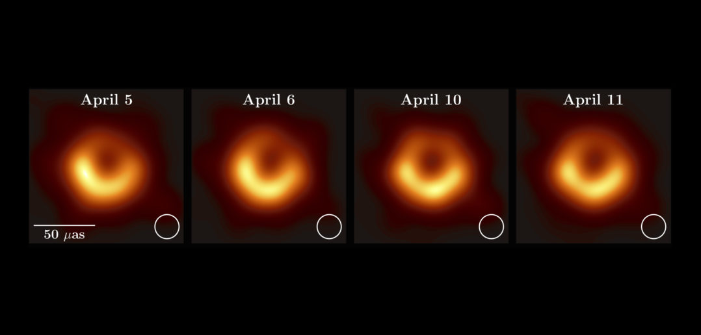

|
قبل مانجاوب على تساؤلك نحتاج نعرف ماهو الثقب الأسود وهل هو فعلاً بوابة الى عالم آخر كما تقول بعض الخرافات ؟
الثقب الأسود عبارة عن تجمّع كوني ذو جاذبية هائلة، والذي يقوم بسحب كل شيء حوله له حتى الضوء ، ويتشكّل الثقب الأسود عند موت نجم ضخم ، ويحدث ذلك عندما يستنفذ النجم جميع وقوده النووي الحراري الداخلي في آخر مراحل حياته ليصل إلى ما يُسمى بالتفرّد ، والتي يكون حجمه فيها صفر، وكثافته لا متناهية .
Event Horizon Telescope هنا أول صورة صدرت للثقب الأسود نتيجة مراقبة أربع أيام عن طريق فريق

|